Tidy Tuesday
Loading and Checking Data
#packages
library(tidyverse)
library(ggplot2)
library(readr)
library(here)## here() starts at /Users/nicholasmallis/Desktop/MADA_Fall_2021/NicholasMallis-MADA-portfolio# Get the Data
papers <- readr::read_csv('https://raw.githubusercontent.com/rfordatascience/tidytuesday/master/data/2021/2021-09-28/papers.csv')##
## ── Column specification ─────────────────────────
## cols(
## paper = col_character(),
## year = col_double(),
## month = col_double(),
## title = col_character()
## )authors <- readr::read_csv('https://raw.githubusercontent.com/rfordatascience/tidytuesday/master/data/2021/2021-09-28/authors.csv')##
## ── Column specification ─────────────────────────
## cols(
## author = col_character(),
## name = col_character(),
## user_nber = col_character(),
## user_repec = col_character()
## )programs <- readr::read_csv('https://raw.githubusercontent.com/rfordatascience/tidytuesday/master/data/2021/2021-09-28/programs.csv')##
## ── Column specification ─────────────────────────
## cols(
## program = col_character(),
## program_desc = col_character(),
## program_category = col_character()
## )paper_authors <- readr::read_csv('https://raw.githubusercontent.com/rfordatascience/tidytuesday/master/data/2021/2021-09-28/paper_authors.csv')##
## ── Column specification ─────────────────────────
## cols(
## paper = col_character(),
## author = col_character()
## )paper_programs <- readr::read_csv('https://raw.githubusercontent.com/rfordatascience/tidytuesday/master/data/2021/2021-09-28/paper_programs.csv')##
## ── Column specification ─────────────────────────
## cols(
## paper = col_character(),
## program = col_character()
## )#looking at each dataset
glimpse(papers)## Rows: 29,434
## Columns: 4
## $ paper <chr> "w0001", "w0002", "w0003", "w0004", "w0005", "w0006", "w0007", …
## $ year <dbl> 1973, 1973, 1973, 1973, 1973, 1973, 1973, 1973, 1973, 1973, 197…
## $ month <dbl> 6, 6, 6, 7, 7, 7, 8, 9, 9, 9, 9, 10, 10, 10, 10, 11, 11, 11, 12…
## $ title <chr> "Education, Information, and Efficiency", "Hospital Utilization…glimpse(authors)## Rows: 15,437
## Columns: 4
## $ author <chr> "w0001.1", "w0002.1", "w0003.1", "w0004.1", "w0005.1", "w0…
## $ name <chr> "Finis Welch", "Barry R Chiswick", "Swarnjit S Arora", "Le…
## $ user_nber <chr> "finis_welch", "barry_chiswick", "swarnjit_arora", NA, "ja…
## $ user_repec <chr> NA, "pch425", NA, "pli669", "psm28", NA, NA, NA, "pli259",…glimpse(programs)## Rows: 21
## Columns: 3
## $ program <chr> "AG", "AP", "CF", "CH", "DAE", "DEV", "ED", "EEE", "…
## $ program_desc <chr> "Economics of Aging", "Asset Pricing", "Corporate Fi…
## $ program_category <chr> "Micro", "Finance", "Finance", "Micro", "Micro", "Mi…glimpse(paper_authors)## Rows: 67,090
## Columns: 2
## $ paper <chr> "w0001", "w0002", "w0003", "w0004", "w0005", "w0006", "w0007",…
## $ author <chr> "w0001.1", "w0002.1", "w0003.1", "w0004.1", "w0005.1", "w0006.…glimpse(paper_programs)## Rows: 53,996
## Columns: 2
## $ paper <chr> "w0074", "w0087", "w0087", "w0107", "w0116", "w0117", "w0129"…
## $ program <chr> "EFG", "IFM", "ITI", "PE", "PE", "LS", "HE", "IFM", "ITI", "H…#merging all together
joined <- left_join(papers, paper_authors) %>%
left_join(authors) %>%
left_join(paper_programs) %>%
left_join(programs)%>%
mutate(
catalogue_group = str_sub(paper, 1, 1),
catalogue_group = case_when(
catalogue_group == "h" ~ "Historical",
catalogue_group == "t" ~ "Technical",
catalogue_group == "w" ~ "General"
),
.after = paper
) ## Joining, by = "paper"## Joining, by = "author"## Joining, by = "paper"## Joining, by = "program"#checking
glimpse(joined)## Rows: 130,081
## Columns: 12
## $ paper <chr> "w0001", "w0002", "w0003", "w0004", "w0005", "w0006"…
## $ catalogue_group <chr> "General", "General", "General", "General", "General…
## $ year <dbl> 1973, 1973, 1973, 1973, 1973, 1973, 1973, 1973, 1973…
## $ month <dbl> 6, 6, 6, 7, 7, 7, 8, 9, 9, 9, 9, 9, 10, 10, 10, 10, …
## $ title <chr> "Education, Information, and Efficiency", "Hospital …
## $ author <chr> "w0001.1", "w0002.1", "w0003.1", "w0004.1", "w0005.1…
## $ name <chr> "Finis Welch", "Barry R Chiswick", "Swarnjit S Arora…
## $ user_nber <chr> "finis_welch", "barry_chiswick", "swarnjit_arora", N…
## $ user_repec <chr> NA, "pch425", NA, "pli669", "psm28", NA, NA, NA, "pl…
## $ program <chr> NA, NA, NA, NA, NA, NA, NA, NA, NA, NA, NA, NA, NA, …
## $ program_desc <chr> NA, NA, NA, NA, NA, NA, NA, NA, NA, NA, NA, NA, NA, …
## $ program_category <chr> NA, NA, NA, NA, NA, NA, NA, NA, NA, NA, NA, NA, NA, …#saving data as a csv to folder
write.csv(joined,"/Users/nicholasmallis/Desktop/MADA_Fall_2021/NicholasMallis-MADA-portfolio/Data/tidy.csv", row.names = FALSE)
#let's see how big the dataset is?
nrow(joined)## [1] 130081#from the glimpse above, we see that there might be a lot missing for
#program, program_desc, and program category. let's look closer
prop.table(table(joined$program, useNA = "always"))##
## AG AP CF CH DAE DEV
## 0.032572013 0.052305871 0.047301297 0.034609205 0.025906935 0.029589256
## ED EEE EFG HC HE IFM
## 0.033140889 0.023708305 0.100806421 0.035962208 0.051283431 0.065882027
## IO ITI LE LS ME PE
## 0.034532330 0.054773564 0.021471237 0.108271000 0.054742814 0.107371561
## POL PR TWP <NA>
## 0.027344501 0.046770858 0.007579893 0.004074384prop.table(table(joined$program_desc, useNA = "always"))##
## Asset Pricing
## 0.052305871
## Children
## 0.034609205
## Corporate Finance
## 0.047301297
## Development Economics
## 0.029589256
## Development of the American Economy
## 0.025906935
## Economic Fluctuations and Growth
## 0.100806421
## Economics of Aging
## 0.032572013
## Economics of Education
## 0.033140889
## Environment and Energy Economics
## 0.023708305
## Health Care
## 0.035962208
## Health Economics
## 0.051283431
## Industrial Organization
## 0.034532330
## International Finance and Macroeconomics
## 0.065882027
## International Trade and Investment
## 0.054773564
## Labor Studies
## 0.108271000
## Law and Economics
## 0.021471237
## Monetary Economics
## 0.054742814
## Political Economics
## 0.027344501
## Productivity, Innovation, and Entrepreneurship
## 0.046770858
## Public Economics
## 0.107371561
## Technical Working Papers
## 0.007579893
## <NA>
## 0.004074384prop.table(table(joined$program_category, useNA = "always"))##
## Finance Macro/International Micro <NA>
## 0.09960717 0.27620483 0.61253373 0.01165428#It's not too bad. The highest one was program category and it
#was only missing %1
#let's go ahead and check the others too, but this time use sum(is.na)
#looks like nothing is missing here
sum(is.na(joined$catalogue_group))## [1] 0sum(is.na(joined$year))## [1] 0sum(is.na(joined$month))## [1] 0#looking at top of data
head(joined)## # A tibble: 6 x 12
## paper catalogue_group year month title author name user_nber user_repec
## <chr> <chr> <dbl> <dbl> <chr> <chr> <chr> <chr> <chr>
## 1 w0001 General 1973 6 Educ… w0001… Fini… finis_we… <NA>
## 2 w0002 General 1973 6 Hosp… w0002… Barr… barry_ch… pch425
## 3 w0003 General 1973 6 Erro… w0003… Swar… swarnjit… <NA>
## 4 w0004 General 1973 7 Huma… w0004… Lee … <NA> pli669
## 5 w0005 General 1973 7 A Li… w0005… Jame… james_sm… psm28
## 6 w0006 General 1973 7 A Re… w0006… Vict… victor_z… <NA>
## # … with 3 more variables: program <chr>, program_desc <chr>,
## # program_category <chr>#looking at bottom of data
tail(joined)## # A tibble: 6 x 12
## paper catalogue_group year month title author name user_nber user_repec
## <chr> <chr> <dbl> <dbl> <chr> <chr> <chr> <chr> <chr>
## 1 h0132 Historical 2001 1 A Wo… h0132… Leon… <NA> <NA>
## 2 h0133 Historical 2001 4 What… h0090… John… john_wal… <NA>
## 3 h0134 Historical 2001 7 The … h0002… Mich… michael_… pha740
## 4 h0135 Historical 2001 8 The … h0071… Jose… joseph_f… <NA>
## 5 h0136 Historical 2001 11 The … h0090… John… john_wal… <NA>
## 6 h0137 Historical 2001 12 Shor… h0137… Howa… howard_b… <NA>
## # … with 3 more variables: program <chr>, program_desc <chr>,
## # program_category <chr>#But how many specific papers?
#I'm interested in looking at categories of papers across time,
#but it appears that the data is laid out by author and not paper title.
#Here we table title and glimpse at the number of observations.
#Looks like there are 29,419 rows after this so there would be that many papers
tab <- as.data.frame(table(joined$title))
glimpse(tab)## Rows: 29,419
## Columns: 2
## $ Var1 <fct> ". . . and the Cross-Section of Expected Returns", "'3rd of tha …
## $ Freq <int> 3, 3, 6, 6, 4, 3, 2, 1, 2, 2, 1, 4, 3, 1, 4, 6, 2, 2, 8, 2, 2, 4…#Let's subset the data to only count each paper once
library(data.table)##
## Attaching package: 'data.table'## The following objects are masked from 'package:dplyr':
##
## between, first, last## The following object is masked from 'package:purrr':
##
## transposeDT <- data.table(joined, key="title")
new <- DT[, n := rank(paper, ties.method="first"), by = key(DT)][n == 1]
joined_df <- new[order(new$title),]
#Making the new data frame results in a new one with 29,419 observations which matches our
#table from before
glimpse(joined_df)## Rows: 29,419
## Columns: 13
## $ paper <chr> "w9793", "w11607", "w25732", "w5755", "w17327", "w13…
## $ catalogue_group <chr> "General", "General", "General", "General", "General…
## $ year <dbl> 2003, 2005, 2019, 1996, 2011, 2007, 2008, 2009, 1981…
## $ month <dbl> 6, 9, 4, 9, 8, 9, 12, 12, 11, 4, 4, 8, 8, 4, 7, 12, …
## $ title <chr> "\". . . and six hundred thousand men were dead.\"",…
## $ author <chr> "w0424.1", "w5882.1", "w13674.2", "w1803.2", "w0519.…
## $ name <chr> "Herschel I Grossman", "Helene Rey", "Giovanni L Vio…
## $ user_nber <chr> "herschel_grossman", "helene_rey", "giovanni_violant…
## $ user_repec <chr> NA, "pre8", "pvi7", "phi111", "pha78", "pbl79", "pst…
## $ program <chr> "EFG", "IFM", "EFG", "PE", "LS", "ED", "ITI", "POL",…
## $ program_desc <chr> "Economic Fluctuations and Growth", "International F…
## $ program_category <chr> "Macro/International", "Macro/International", "Macro…
## $ n <int> 1, 1, 1, 1, 1, 1, 1, 1, 1, 1, 1, 1, 1, 1, 1, 1, 1, 1…Some Data Exploration/Plotting
#a simple bar plot of program_category
ggplot(joined_df, aes(x=program_category)) +
geom_bar(fill = "#0073C2FF") + labs(title= "Counts of NBER Papers by Program Category , 1973-2021") + xlab("Program Category") + ylab("Count") 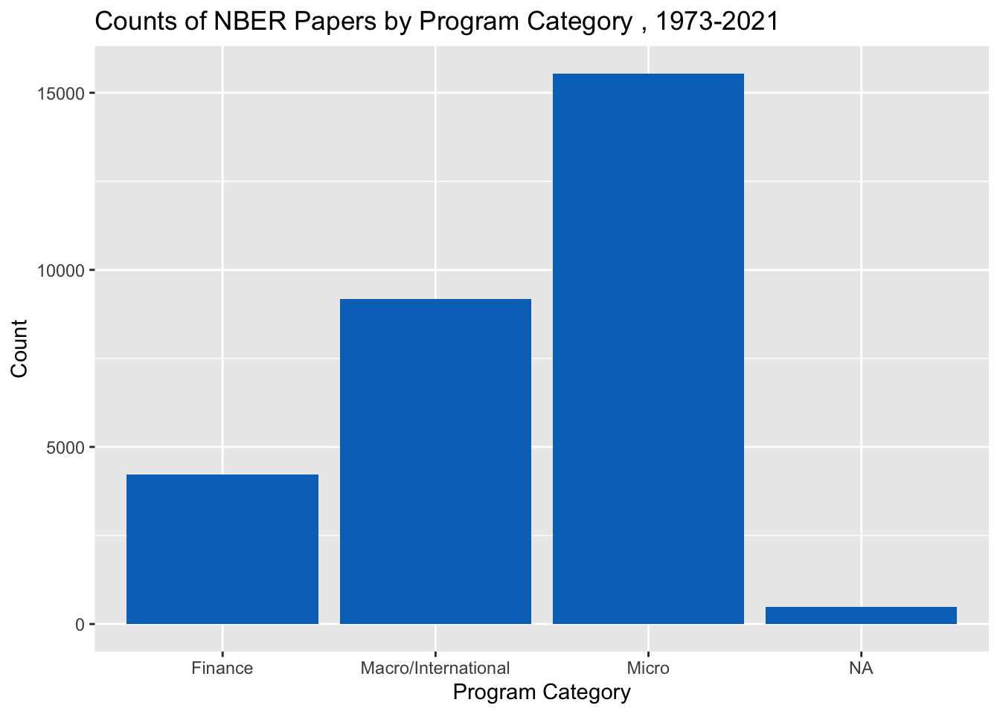
#now again without the NAs
complete <- joined_df[complete.cases(joined_df), ]
ggplot(complete, aes(x=program_category)) +
geom_bar(fill = "#0073C2FF") + labs(title= "Counts of NBER Papers by Program Category , 1973-2021") + xlab("Program Category") + ylab("Count") 
#A simple plot of program
ggplot(joined_df, aes(x=program)) +
geom_bar(fill = "red") + labs(title= "Counts of NBER Papers by Specific Program, 1973-2021") + xlab("Program Abbreviation") + ylab("Count") 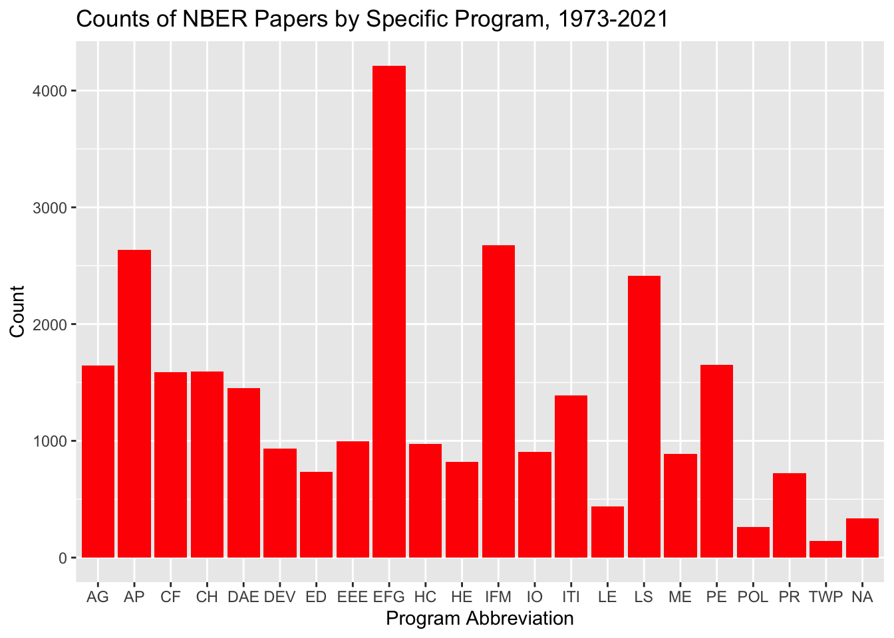
#now again without the NAs
ggplot(complete, aes(x=program)) +
geom_bar(fill = "red") + labs(title= "Counts of NBER Papers by Specific Program, 1973-2021") + xlab("Program Abbreviation") + ylab("Count") 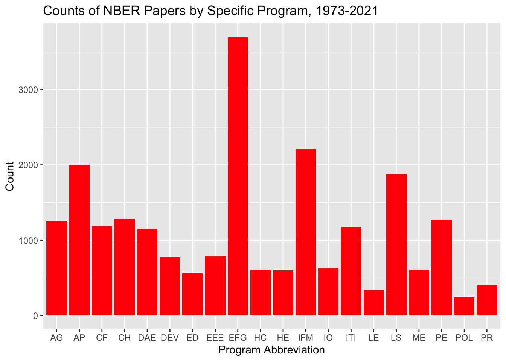
#getting full names to check what we just learned
table(joined_df$program_desc)##
## Asset Pricing
## 2636
## Children
## 1593
## Corporate Finance
## 1588
## Development Economics
## 933
## Development of the American Economy
## 1454
## Economic Fluctuations and Growth
## 4213
## Economics of Aging
## 1645
## Economics of Education
## 735
## Environment and Energy Economics
## 998
## Health Care
## 973
## Health Economics
## 819
## Industrial Organization
## 904
## International Finance and Macroeconomics
## 2676
## International Trade and Investment
## 1390
## Labor Studies
## 2413
## Law and Economics
## 440
## Monetary Economics
## 890
## Political Economics
## 264
## Productivity, Innovation, and Entrepreneurship
## 725
## Public Economics
## 1648
## Technical Working Papers
## 144#It looks like Labor Studies, Political Economics, and Economic Fluctuations and Growth
#were most common.
#let's look at year, but first some data management
joined_df$year2 <- lubridate::ymd(joined_df$year, truncated = 2L)
#Now plotting the new year variable
#Here we see a sharp increase between year 2000 and now.
#And and even sharper increase from 2019 to 2021
ggplot(joined_df, aes(x=year2)) +
geom_bar(fill = "#0073C2FF") + labs(title= "Counts of NBER Papers by Year, 1973-2021") + xlab("Year") + ylab("Count") 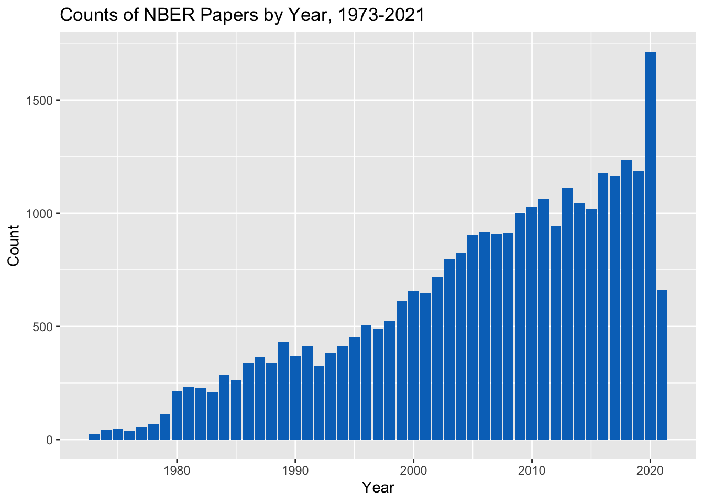
#Now we can look at this over time by program category
#It seems that Micro papers have made up most of the papers being written
#since the mid 90's and contribute most to the steep increase
#in papers.
ggplot(joined_df, aes(x=year2, fill=program_category)) + geom_bar() +
labs(title= "Counts of NBER Papers by Year and Program Category, 1973-2021") + xlab("Year") + ylab("Count") 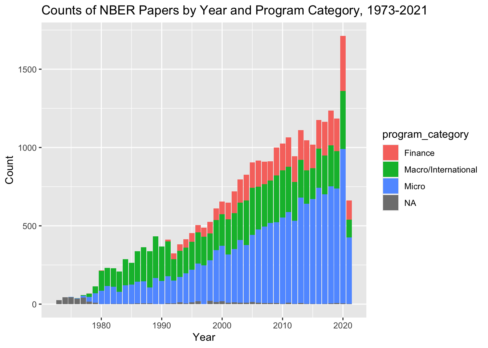
#Same thing here, but now I omit the missing.
complete$year2 <- lubridate::ymd(complete$year, truncated = 2L)
ggplot(complete, aes(x=year2, fill=program_category)) + geom_bar() +
labs(title= "Counts of NBER Papers by Year and Program Category, 1973-2021") + xlab("Year") + ylab("Count") 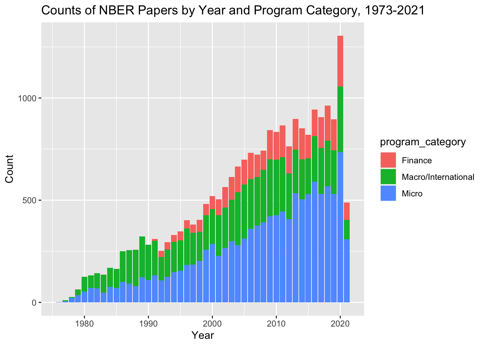
#I might be reaching here, but let's look at what month is most common for paper.
#Nothing to interesting
ggplot(joined_df, aes(x=month, fill=program_category)) + geom_bar() 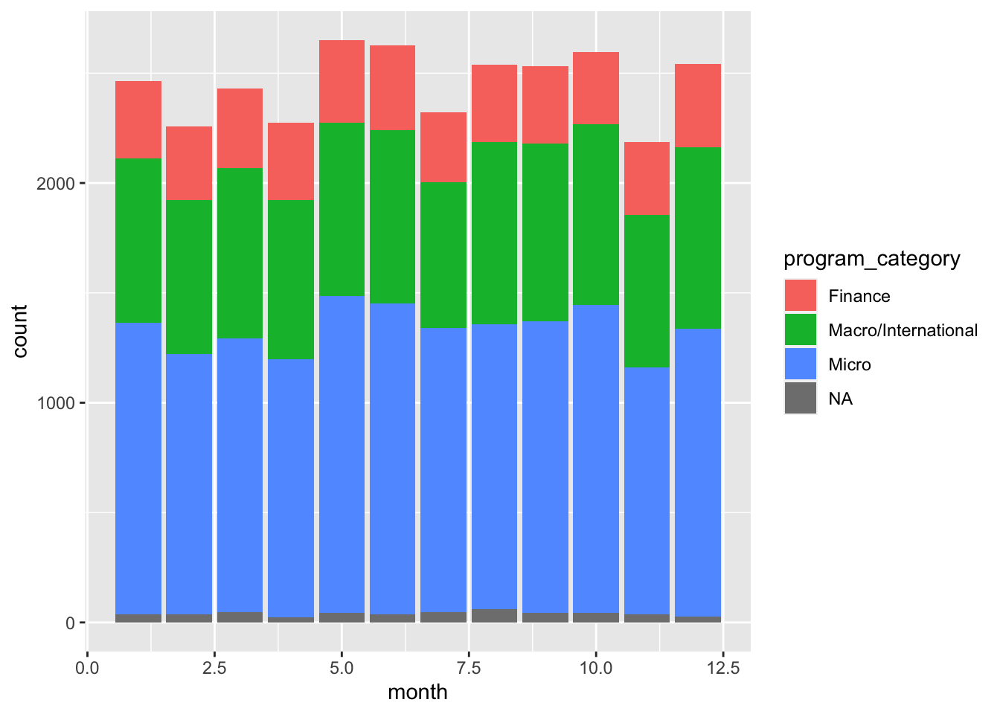
#Now let's look at each specific program by year
ggplot(joined_df, aes(x=year2, fill=program)) + geom_bar() + labs(title= "Counts of NBER Papers by Year and Specific Program, 1973-2021") + xlab("Year") + ylab("Count") 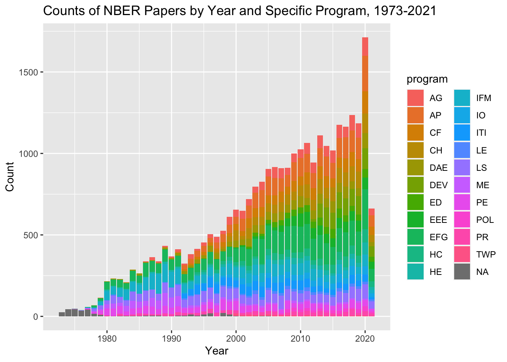
#Sort of difficult to see with so many categories. I am particularly
#interested in how the quantity of healthcare related papers has changed over time
#Here I will make a new variable called 'health' that groups all the the health related
#papers together
table(joined_df$program_desc)##
## Asset Pricing
## 2636
## Children
## 1593
## Corporate Finance
## 1588
## Development Economics
## 933
## Development of the American Economy
## 1454
## Economic Fluctuations and Growth
## 4213
## Economics of Aging
## 1645
## Economics of Education
## 735
## Environment and Energy Economics
## 998
## Health Care
## 973
## Health Economics
## 819
## Industrial Organization
## 904
## International Finance and Macroeconomics
## 2676
## International Trade and Investment
## 1390
## Labor Studies
## 2413
## Law and Economics
## 440
## Monetary Economics
## 890
## Political Economics
## 264
## Productivity, Innovation, and Entrepreneurship
## 725
## Public Economics
## 1648
## Technical Working Papers
## 144#new categories
joined_df$health <- "Non-Health Related"
joined_df$health[ is.na(joined_df$program_desc)] <- NA
joined_df$health[joined_df$program_desc=="Health Care" | joined_df$program_desc=="Health Economics"] <- "Health Related"
#Checking. Looks good
table(joined_df$health, useNA = "always")##
## Health Related Non-Health Related <NA>
## 1792 27289 338#First plotting without time
ggplot(joined_df, aes(x=health)) +
geom_bar(fill = "#0073C2FF") + labs(title= "Counts of NBER Papers by Health Related Topics, 1973-2021") + xlab("Program") + ylab("Count") 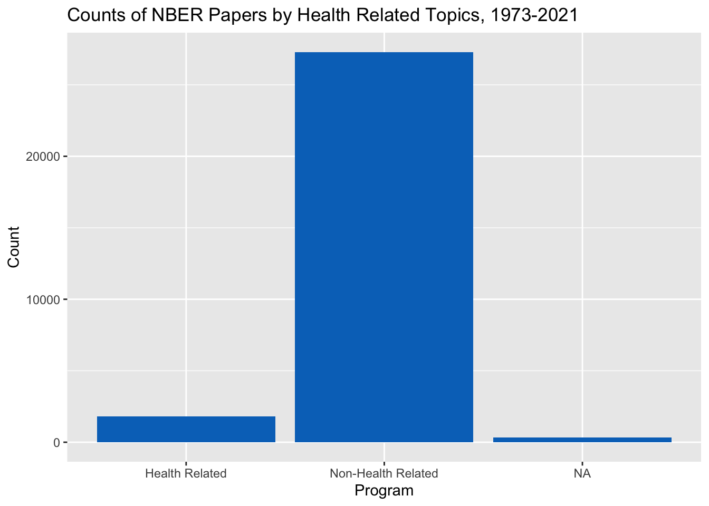
#Now plotting health accross time.
#It looks like there a lot more health papers in 2020
#which makes sense of course. But there were a lot more papers in
#general in 2020
ggplot(joined_df, aes(x=year2, fill=health)) + geom_bar() +
labs(title= "Counts of NBER Papers by Health Related Topics by Year, 1973-2021") + xlab("Year") + ylab("Count") 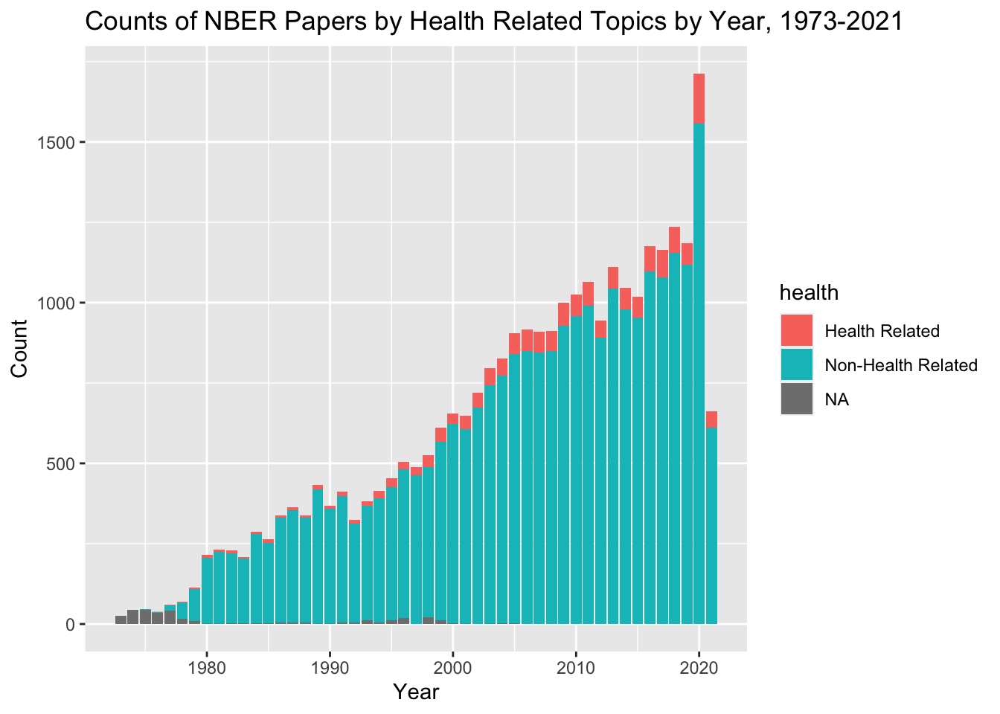
#Last, I'd like to see which author has written the most papers
#First we'll table all names and create a new data frame.
#But we have to use our original dataset before we set it to one paper an observation
totals <- as.data.frame(table(joined$name))
glimpse(totals)## Rows: 15,398
## Columns: 2
## $ Var1 <fct> A Abigail Payne, A Bowen Garrett, A Burak Guner, A Colin Cameron…
## $ Freq <int> 9, 4, 2, 3, 63, 10, 1, 3, 4, 2, 1, 8, 19, 4, 37, 1, 2, 2, 1, 1, …#Then we'll sort this new data frame by frequency
totals <- totals[order(-totals$Freq),]
#And look at the totals. It looks like
#Jonathan Gruber had the most papers
#next to James J Heckman
#But let's make this a nice table
mostpapers <- as.tibble(head(totals, n=10L))## Warning: `as.tibble()` is deprecated as of tibble 2.0.0.
## Please use `as_tibble()` instead.
## The signature and semantics have changed, see `?as_tibble`.
## This warning is displayed once every 8 hours.
## Call `lifecycle::last_warnings()` to see where this warning was generated.mostpapers <- mostpapers %>%
rename(
Name= Var1 ,
Number_of_Papers= Freq
)
print(mostpapers)## # A tibble: 10 x 2
## Name Number_of_Papers
## <fct> <int>
## 1 Jonathan Gruber 359
## 2 James J Heckman 331
## 3 Daron Acemoglu 308
## 4 Janet M Currie 306
## 5 Michael D Bordo 297
## 6 Edward L Glaeser 291
## 7 Joshua Aizenman 284
## 8 Martin S Feldstein 272
## 9 Andrei Shleifer 242
## 10 Alan M Taylor 239#Based on what we saw before, I assume that he will have written
#papers about Labor Studies, Political Economics, and Economic Fluctuations and Growth
#in the last 30 years, but I could be wrong.
#Let's subset the data to only look at Jonathn Gruber's papers
gruber <- joined[which(joined$name=='Jonathan Gruber'), ]
gruber$year2 <- lubridate::ymd(gruber$year, truncated = 2L)
#Now we'll recreate some of the other plots with only grubers information
#Based on this plot, it looks like John Gruber was most prolific in year 2000 and
#year 2020
ggplot(gruber, aes(x=year2)) + geom_bar() + labs(title= "John Gruber's Paper Counts by Year, 1990-2021") + xlab("Year") + ylab("Count") 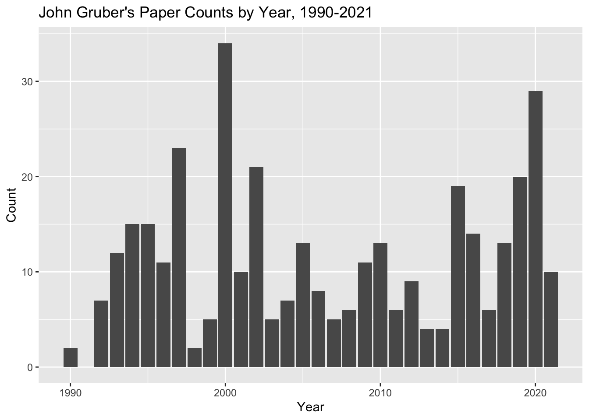
#Examining the most common topics he researches
#Looks like he is most interested in Public Economics.
#I guess I was wrong!
ggplot(gruber, aes(x=program)) + geom_bar() + labs(title= "John Gruber's Papers, 1990-2021") + xlab("Year") + ylab("Count") 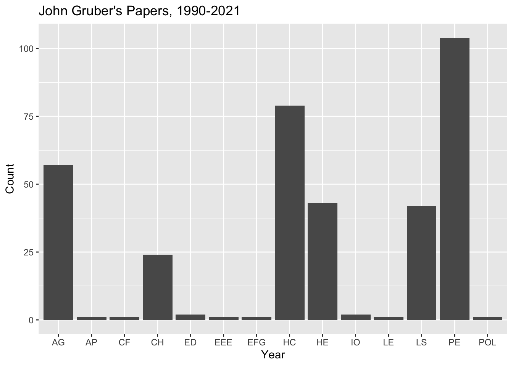
#Let's see what he wrote about most in 2020.
#First one more subset
gruber_2020 <- gruber[which(gruber$year2=='2020-01-01'), ]
#Now plotting and again. Looks like Healthcare and Health Econ were the highest
ggplot(gruber_2020, aes(x=program)) + geom_bar() + labs(title= "John Gruber's Paper Topics in 2020") + xlab("Topics") + ylab("Count") 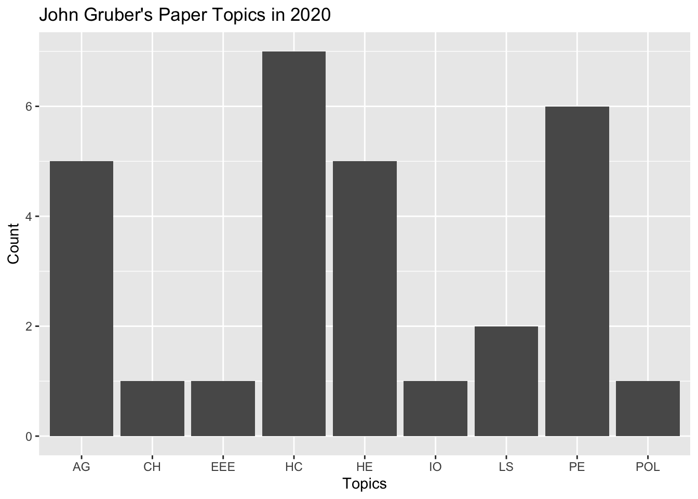
table(gruber_2020$program)##
## AG CH EEE HC HE IO LS PE POL
## 5 1 1 7 5 1 2 6 1